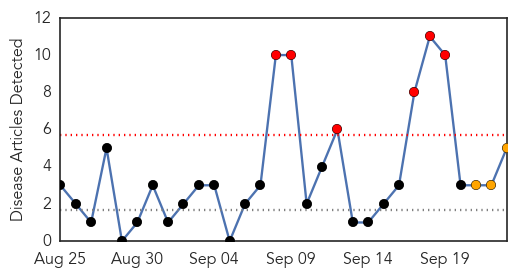
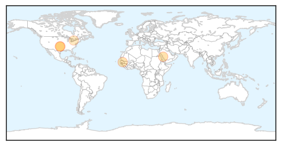
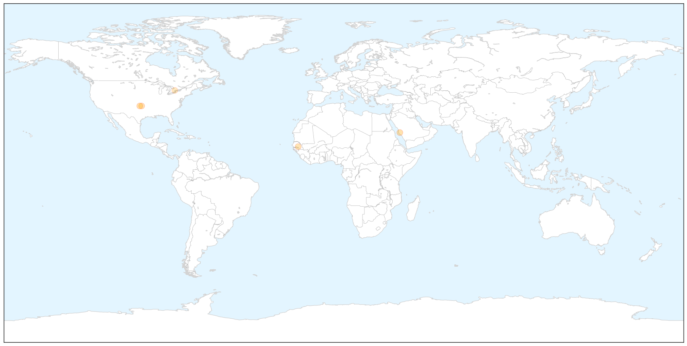
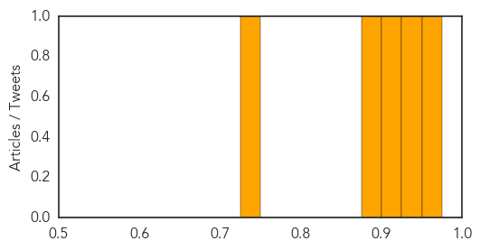
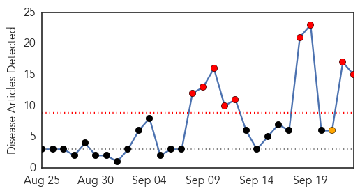
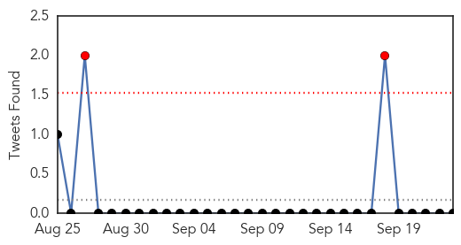
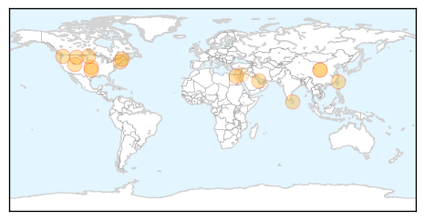
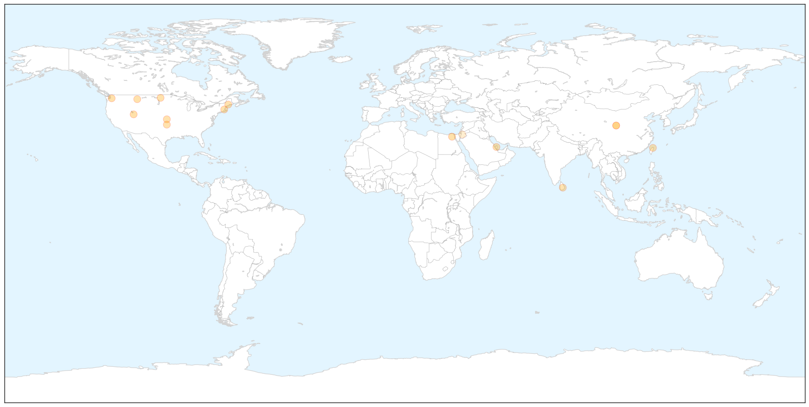

Meningitis
30-Day Web Trend
6 alerts, 3 warnings

30-Day Twitter Trend
1 alerts, 0 warnings

Article Locations

X

Article Confidences
Top Articles:
- 0.968
- 22,000 medics assigned to ensure ‘healthy’ Haj
- 0.942
- Union City Schools were closed Tuesday as health officials investigated several reported cases of meningitis
- 0.902
- Update: Suspected Meningitis outbreak forces one central Oklahoma school to close, test results released
- 0.899
- Led global vaccine campaign to stamp out childhood bacterial meningitis, pneumonia
- 0.733
- Infection outbreak at pain clinic sparks calls for greater transparency
Top Tweets:
-
No tweets found for Sep 23, 2014
Influenza
30-Day Web Trend
9 alerts, 1 warnings

30-Day Twitter Trend
2 alerts, 0 warnings

Article Locations

X

Article Confidences

Top Articles:
- 0.997
- Column: Epidemics and the global village
- 0.997
- Enterovirus D68 confirmed in Utah, positive cases at Primary Children’s Hospital
- 0.990
- CDC confirms enterovirus D68 in King County; child hospitalized
- 0.962
- Bismarck/Minot/Williston/Dickinson-KXNEWS,ND
- 0.960
- Officials urge prevention in wake of enterovirus cases
- 0.949
- Newly-detected bird flu in Southeast Asia poses threat to animal health, people's livelihoods
- 0.949
- Newly-detected bird flu in Southeast Asia poses threat to animal health, people's livelihoods
- 0.949
- Newly-detected bird flu in Southeast Asia poses threat to animal health, people's livelihoods
- 0.949
- Newly-detected bird flu in Southeast Asia poses threat to animal health, people's livelihoods
- 0.949
- Newly-detected bird flu in Southeast Asia poses threat to animal health, people's livelihoods
- 0.939
- Newly-detected bird flu in Southeast Asia poses threat to animal health people livelihoods
- 0.916
- Pregnant moms to get flu shots
- 0.912
- Newly-detected bird flu in Southeast Asia
- 0.718
- FAO issues warning over new strain of avian ‘flu H5N6
- 0.553
- Increase in regional respiratory illnesses prompts visitor restrictions at McLaren Bay Region, Special Care
Top Tweets:
-
No tweets found for Sep 23, 2014